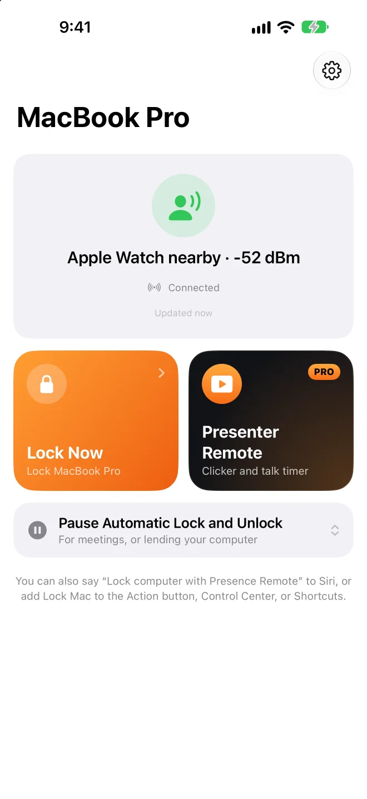
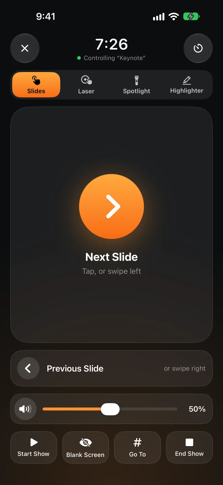

Walk away, it locks.Come back, it opens.
Presence lives in your Mac’s menu bar and listens for the Bluetooth signal your iPhone or Apple Watch already sends out. When the signal fades, your screen locks. When you walk back to your desk, it unlocks for you. Nothing to install on your phone or watch.
The Mac app is free and open source. Requires macOS 26 or later.
and it unlocks Go this far
and it locks
Apple Watch nearby−52 dBm
Drag You to the right and watch when the Mac locks. Then walk back.
Better to unlock a little late than to lock you out.
Bluetooth signal jumps around; turning around can change it a lot. Presence follows a few cautious rules, so it doesn’t lock you while you’re sitting there, and no one else gets into your Mac.
A few seconds of trend, not one reading
It takes the median of the last 4 seconds, with at least 3 readings. One sudden spike or dip doesn’t count.
Two lines: one to lock, one to unlock
The lock threshold sits below the unlock threshold, so standing in between never flips back and forth. Calibrate each device by standing where you want it to unlock and lock for 8 seconds each.
Still typing? It waits
If the signal fades but someone is still using the keyboard or mouse, locking waits.
It asks your iPhone before unlocking
With Presence Remote, your Mac asks your iPhone to answer with the key you exchanged when pairing before it types your password. A spoofed Bluetooth signal can’t unlock your Mac.
Apple Watch goes first
Before unlocking, it waits a few seconds so macOS can unlock with your Apple Watch. Only if the Mac is still locked does Presence type your password, checking it’s still on the login screen before every few characters.
Locks when it should. Stays out of the way when it shouldn’t.
All of this is in the Mac app, free.
No locking mid-presentation
While Keynote or PowerPoint is playing a slideshow, auto-lock pauses. Walk to the front of the room and the projector won’t suddenly show a login screen.
Relaxed at home
Don’t auto-lock on a trusted network, while plugged in, or outside the hours you choose. Networks are recognized by the router, so no location permission is needed.
Pause for a while
Lending your Mac or heading into a meeting? Pause for 15 minutes to 4 hours. If you’re not around when it ends, it locks right away.
Know if someone unlocks it while you’re away
If someone unlocks your Mac by hand while you’re not nearby, it’s recorded in the history. Presence can also take a photo and notify your iPhone.
How long you sat today
Desk time keeps track of today and the last 7 days, and nudges you to get up when you’ve been sitting too long.
Coming from BLEUnlock
Presence started from BLEUnlock’s idea and was rewritten for current macOS. Import your devices and thresholds with one click.



On stage, your phone is the clicker.
No remote to buy, no receiver to plug in. Move your finger on your phone, and a red dot, a spotlight, or a highlighter line appears at the same spot on the big screen. Try it on the phone below.
Pick Laser, Spotlight, or Highlighter, then touch and drag in the phone’s pad. Highlighter lines fade after a few seconds and clear when you change slides.
Tap or swipe to change slides
Jump to a slide, black out the screen, start and end the show.
Works from the Lock Screen
Slide buttons on the Lock Screen and in the Dynamic Island, no unlocking needed.
Apple Watch is a clicker too
Tap, turn the Digital Crown, or double tap. Swipe left for your Mac’s volume.
Talk timer
Set how long you’ll talk; a tap on your wrist at 5 minutes left and when time is up.
Your Mac’s volume
Video in your slides too loud or too quiet? Adjust it without walking back. No volume indicator pops up on the big screen.
Any presentation app
Keynote, PowerPoint, Google Slides, PDFs. The dot and spotlight are drawn on top and never click anything.
Locking is free. The clicker is Pro.
The Mac app and Presence Remote for iPhone and Apple Watch are free. Only Presenter Remote is part of Presence Pro.
Mac app
Open source, notarized by Apple, and updates itself.
- Locks when you leave, unlocks when you’re back
- Stays unlocked while presenting or at home
- History and desk time
Presence Remote
The companion app for iPhone and Apple Watch.
- Lock from your iPhone, watch, or Control Center
- Pause and resume auto-lock
- Notifications when your Mac locks or someone unlocks it
- Encrypted check before unlocking
Presence Pro
Presenter Remote: slides, laser, spotlight, highlighter, volume, and talk timer, on iPhone and Apple Watch.
Both subscriptions start with a 7-day free trial. All three work with Family Sharing.
Upgrade in the appYour Mac only listens to your phone.
No account, no server
Your Mac and phone talk directly over Bluetooth, never over the internet. The developer receives nothing from you.
Every command is encrypted
Pairing creates a key only your devices share. Every command and status is encrypted and verified with it, so someone else’s phone can’t send commands.
Your password stays in your keychain
The login password used for unlocking is stored in your Mac’s keychain, and only after Presence checks that it’s correct.
Open source
The Mac app is fully open source. You can read exactly how it decides and how it unlocks.
Questions
Do I need to install an app on my phone?
No. Presence listens to the Bluetooth signal your iPhone and Apple Watch already send, so the Mac app alone locks and unlocks. With Presence Remote you can also lock remotely, get notifications, and add an encrypted check before unlocking; Presence Pro adds Presenter Remote.
What do I need?
A Mac with Bluetooth LE running macOS 26 or later. Presence Remote needs iOS 26 or watchOS 26 or later. You can also use just an Apple Watch, or another Bluetooth device that advertises regularly with a fixed address.
How is this different from Unlock with Apple Watch?
The built-in feature only unlocks; it doesn’t lock when you walk away. Presence does both, and when unlocking it first waits a few seconds so your watch can unlock the Mac; it only types your password if the watch didn’t. The two work together.
Will it lock while I’m sitting still?
The signal has to stay weak for several seconds, and the lock threshold sits below the unlock threshold. If you’re still typing or using the mouse, locking waits. If it’s still too sensitive, recalibrate on the Devices page.
Why isn’t the Mac app on the Mac App Store?
Unlocking automatically means typing your login password, which Mac App Store apps aren’t allowed to do. So the Mac app is notarized by Apple, downloaded from GitHub, and updates itself.
Which presentation apps work?
Changing slides sends arrow keys, which Keynote, PowerPoint, Google Slides, and PDF viewers understand. The laser, spotlight, and highlighter are drawn by Presence on top of everything, so they work with whatever is on the screen. Turn on Allow Presenter Remote in Presence on your Mac first.
Does it drain the battery?
Your iPhone and Apple Watch send these signals anyway; Presence just listens on your Mac, where it normally uses under 1% CPU.